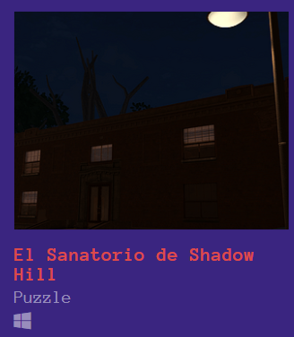
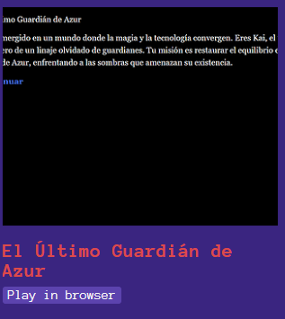
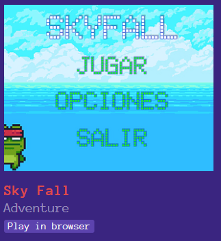
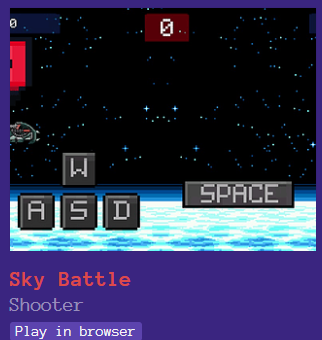
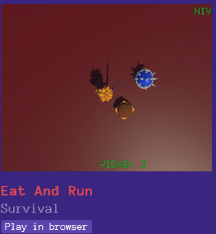

El Sanatorio de Shadow Hill
Puzzle / TerrorVideojuego de terror psicológico enfocado en exploración, narrativa ambiental y resolución de acertijos.
Ver en Itch.io

El Último Guardián de Azur
AdventureJuego de aventura narrativa ambientado en un mundo de fantasía, con enfoque en historia y diferentes caminos.
Ver en Itch.io

Sky Fall
AdventureVideojuego 2D con estilo pixel art, centrado en exploración y mecánicas clásicas.
Ver en Itch.io

Sky Battle
ShooterShooter 2D con mecánicas arcade y enfoque en reflejos rápidos.
Ver en Itch.io

Eat And Run
SurvivalJuego de supervivencia con estilo retro y mecánicas clásicas.
Ver en Itch.io